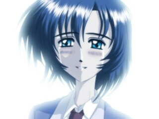

謎の少女
2001.12.01
|  |
※以下の内容は、追加シナリオのネタバレを含むのでご注意ください。
追加シナリオのトゥルーＥＤを見てから、読むようにしましょう。
単一ヒロインを売りにしていた（？）このゲームにおける、第二のヒロインとして登場した彼女です。あらゆる要素がゆり子と対照的でありながら、作者の思い入れは人一倍深かったりします。っつーか可愛いければ何でもいいのか、自分。
（１）モデルについて
アヤナミです。
…なんて一言で説明を終えるのもナニですんで、いろいろ追加しておきます。
「ＣＤ版製作日誌」にも書いてますが、「ネコ系の性格」として設定されている彼女は、「神秘性」と「凛々しさ」をより前面に押し出したデザインになっています。ゆり子と比べて顔つきもシャープで、幾重にも自分の周りに壁を作っていそうな少女。それでいて、内奥の自分は暖かい抱擁を求めてやまないというか……
その強さ、髪型、神秘性、本名、パパLOVE（はぁと）な部分を総合いたしますと、分かる方には一撃で分かってしまう元ネタが浮かんでくることでしょう。
……ええ、好きなんですってば！
天野先輩が一番なんですってば！！
（２）性格設定
ゆり子と非常に対照的なその性格は、短い追加シナリオの文面だけでは読みきれないものがあります。でもそれは、彼女の今までの境遇を考えると、無理からぬことかもしれません。
彼女は生まれてこのかた、その特異な能力ゆえに偏見の目で見られてきました。特に、幼い頃に能力に目覚めてからというもの、賢者からの刺客との戦いが日常茶飯事になり、ほとんど普通の生活を送れなくなっていたのかもしれません。
最初の頃は、聡志が残した研究の成果と「指輪」の力で、ゆり子が娘を守ってやっていたのでしょう。しかし、娘の能力が顕在化するにつれ、ゆり子の力では対処できなくなってしまい、今度は逆に娘が母親を守らなければならない状況になっていきました。
こんな中で育った彼女は、「自分がしっかりしなければならない」、「母親を守ることが自分の使命」といった認識を自分に課してきました。だから誰かに頼ることもなく、また危険に巻き込むことを恐れて誰とも接点を持たずにいたのでしょう。
ですから実際のところ、誰かに愛されたいという願望と独占欲は人一倍高く、一途さは非常に強いです。そんなところが、パパのはぁとをくすぐるんですよねぇ（バカ）
（３）父親への想い
そんな彼女にとって、顔を見たことのない父親への想いはとても複雑です。
彼女が生まれたときには、聡志はすでに世になかったわけですから、父親に関する直接的な記憶は一切ありません。父親について知っていることは、ゆり子を通して伝えられた情報だけ。もちろんゆり子のことですから、かなり美化して伝えていたのかもしれませんが……
もちろん、彼女だってオンナノコですから、パパに遭いたいという気持ちはとても強かったことでしょう。しかしその一方で、父親を責めたい気持ちも多分にあったに違い有りません。
自分がこんな能力を持って生まれたのも、元を辿れば父親のせい。
母親が苦労しているのも、父親のせい。
自分が母親を守りながら生きてゆかなければならないもの、父親のせい。
本来なら、会ったその時にすべてをぶつけてやりたいと思っても不思議じゃありません。
そんなふうに、相反する矛盾した感情で心が揺らいで－最初に街の中で会ったときには、何も言わずにその場を立ち去ってしまったのです。
しかし、病院での事件の後の出来事に注目してください。
彼女は聡志に、「ゆり子さんに会っていきますか」と尋ねたそのとき、聡志のゆり子に対する愛情の深さを見ておきたかったのだと思います。後に残された妻と娘に対して、聡志がどれほど責任を感じているのだろうか、という疑問の答えを得たかったのです。
そして、聡志はゆり子の枕元に立ち－ゆり子に誓いのキスをします。彼女はその姿を見て、聡志が母親のことを本当に愛していたのだということを知って、聡志を許す気持ちになれたのです（これがトゥルーＥＤの必須条件になっているのは、そういう意味があるんですよ）。
その後、里山村での”守護者”との戦い－傷ついた自分を手当てしてくれたこと、自分の身を挺して囮になってくれた勇気……そういった父親の姿を見て、自分の素直な気持ちを注ぎ出すことができるようになりました。
本来なら正体を明かさず、指輪だけ渡して帰るつもりだったのでしょう。しかしこの経験を通して、彼女はもう一人の肉親－自分の全てをさらけ出してもいいと思える、心から頼れる存在－を得ることができました。だから、ほんの短い逢瀬でしたけど、彼女は幸福だったのでしょう。そして、聡志なら未来を変えてくれるだろうことを確信しながら、元の時代へ帰ってゆくことができたのです。
……いやぁ～！！
帰らないでくれよぉぉぉぉ～！！（親バカ）
（４）物語の見所
もう何といったって、トゥルーＥＤの別れの台詞ですね。
ここを書いていたときはもうノリノリでした。台詞が浮かんでくるにつれ、感情だけで突っ走ってしまうのを何とかセーブしようと試みたのですが、もうダメです。ダメパパ全開です。
「大丈夫よ、パパ…また会えるから。
今度はあなたの娘として、あなたの腕の中に生まれてくる。
その時はまた、私を優しく抱きしめて。
永劫の時を生きる私が、寒さに震えないように。
パパの温もりを忘れないように」
ああ、抱きしめてやるともＹｏぉぉぉぉ！！（大馬鹿）
…なんて涙にむせびながら叫んでる親バカが一人。
どうしてこう、創作活動って自分の恥をさらすモンなのでしょうね。
そしてトドメの一撃。
「パパ、だいすき………」
ぷちっ。（理性の切れる音）
（以下、お見苦しいので３万字ほど割愛します）
（５）まとめ
結局この物語は、やる気のない青年が責任感のある男へ成長する物語ですから、その見返りとなる喜びをクローズアップした存在が、この少女なのだと言えるでしょう。
あなたもきっと、こんな娘のためなら喜んで苦労しちゃう……よね？
…男って悲しい生き物ダヨネ……